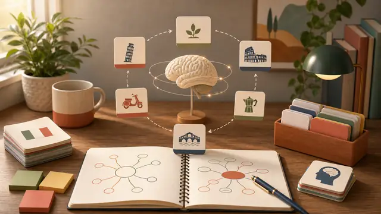
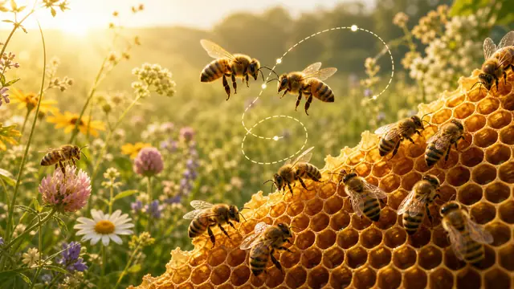

Biblioteca gratuita
Letture graduate per imparare l italiano
Articoli e favole riscritti nei livelli A1, A2, B1, B2 e C1, con parole utili e domande per parlare.
SC
Scienza

Scienza - A1-C1Tecniche di memoria
Strategie semplici per ricordare parole nuove e studiare meglio.
Leggi l articolo → Scienza - A1-C1
Scienza - A1-C1Il sonar del delfino
Come i delfini usano il suono per orientarsi e trovare cibo.
Leggi l articolo →Scienza - A1-C1Come funziona la memoria umana
Un viaggio semplice tra attenzione, ricordi e dimenticanza.
Leggi l articolo →
Scienza - A1-C1Le api: caratteristiche e linguaggio
Vita dell'alveare, danza delle api e informazioni affascinanti.
Leggi l articolo →TE
Tecnologia
CU
Cultura

ST
Storia
FA
Favole


Leggi, scegli un livello e poi parliamo.
Ogni testo pu? diventare conversazione guidata durante una lezione individuale.